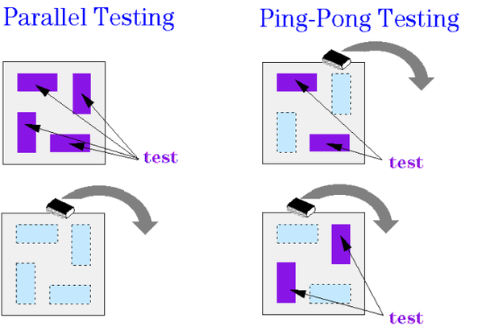
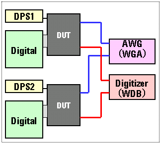

Ways of Optimizing Throughput
There are two general strategies you can follow with multisite testing (see the figure below),
- Parallel Testing
- All sites on the DUT board are mounted.
- When all devices have been placed successfully, the test is run for all sites at one time.
- After the test has finished, all devices are taken out.
- Ping-Pong Testing
There are always some devices under test while others are "on the move".
This allows you to "hide" indexing time behind testing time.

Note The slower your Handler/Prober is, the more beneficial Ping-Pong testing becomes (indexing time is the bottleneck, so use indexing time for Parallel testing). The slower the test is, the more beneficial Parallel testing becomes (test execution time is the bottleneck, so reduce testing to a minimum number of tests). Ping-Pong testing would multiply the number of tests.
The strategy to follow of course depends on the abilities of your handler/prober. The Handler/Prober Libraries must be programmed to indicate which sites have been connected and which sites are under test.
Further, there is a strategy for multisite testing of mixed-signal devices. Naturally, multisite testing for mixed-signal devices requires many analog modules for parallel testing. However, your test system may not have enough analog modules for multisite testing of the desired number of test sites. In this case, the analog modules can be shared with multiple sites as shown in the figure below.

You can optimize your tests according to the availability of analog modules in your test system. That is, if your test system does not have enough analog modules for executing a test in parallel, you can choose to execute the test in serial or parallel for partial sites.
Thus, multisite testing using shared analog modules yields the best throughput by making the most of limited test system resources and thus reducing the total cost of tests.
Functional changes
- Introduced before SmarTest 6.3.2